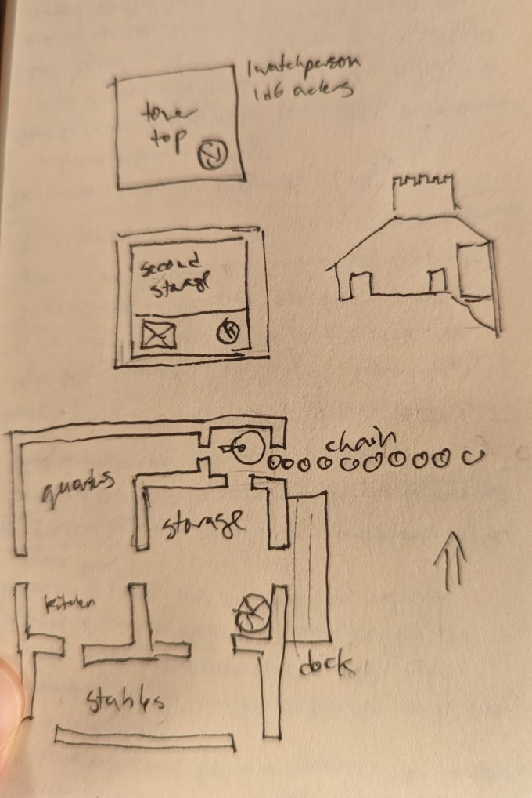

Before we begin
This is a solo game played using Cairn. Part 1 of ??. Next: here. Character stats are at the bottom, here. I originally took most of my notes on paper, this is a bit of an abbreviated highlight.
Some things I do:
- hirelings, but I have a bunch of PCs that I rotate in and out as appropriate. They aren't all together all the time.
- When someone wants to heal strenght, I have them be out of the game for a few days.
- They might also be spending time doing something that makes sense in game. Also, sometimes a PC might go do something on their own without the others.
I'm making use of a few other resources:
Content notes: There's maybe actually a bit less violence than you'd expect, but some of it is war crimes.
The journey
We start with Melnax and Ygwal, two sisters who work at the inn their parents own. In their 20's. Their parents have been missing for a while, after going on a trip south, where they have family. Also, they haven't had many customers, nor the merchants who would bring food. They set out south somewhat out of necessity, taking whatever loose goods are lying around and taking a small rowboat south.
When they set out they see a red star fall from the sky, a bad omen.
The fishing village.
First they stop at a fishing village, where a festival is happening. It's a bit muted though, because recently a boat got attacked by some creature and they haven't been able to travel downriver for a few days. The sisters are headed that way anyway, and Ygwal is confident they can figure it out. They dock and proceed on foot, and after careful observation determine it's a giant catfish. They hatch a plan: Melnax will use some hedge magic and a drop of blood to lure it out, and Ygwal will keep it at bay with a staff while tied to a rope so she can't be pulled into the water, and Melnax will dispatch it. It doesn't go so well - Ygwal isn't actually quite strong enough to hold the carp at bay. Both are badly hurt, but the grateful village lets them rest until they can heal up.
They meet Korak who also got attacked (fish tattoos, values wisdom and caution). Korok tells them the river goes through a dangerous canyon up ahead, and advises them to continue by land - a pair of military posts on either side of the route will guide them.
They leave the boat and cart.
I'm basically totally making up what "hedge magic" is as I go. I'm more or less saying, if it's something that relates to the natural world and probably could have just happened anyway, it counts. Nothing as powerful as a spell in a spellbook, more like a bit of luck here and there. I'm not sure how well that would work outside a solo game.
The military road
Holl the captain (honest, pragmatic) is trying to extract taxes from Fithiny, a merchant, who is trying to cheat them. They decide this is none of their business. One of the soldiers is from the fishing village and knows their parents. They learn that an invisible spirit is stalking the road. It hides in shadows, so they must go at noon. They do this, but it goes poorly - they miss a shadow, and while they are able to pin it down with a torch, they have to fight it and only just survive.
At the other side is Tija (caution, self-preservation), the only one at the post, which seems odd. She says she has seen their parents, and will lead them there. Ygwal thinks Tija is lying but follows her anyway.
Fawa Hills - the bandits
Heading northeast, inland, up another branch of the river, away from the southward route they had set out on. This remote town grows fibres for robe export. It's lead by a hereditary lord. The current one, Javik, is new (level-headedness, pragmatism) - young in a red felt hat. The previous leader was killed in a rebellion against the local town, the seat of power, but they don't know that.
Javik invites them for dinner, and they regale him with the story to get there. He's quietly contemptuous of them, thinking them hot-headed and foolish. He listens carefully to how the roads are falling apart and travelers are few. This maybe is his chance! He could muster the locals, strike again, and gain independence - maybe even gain control of the road - but he doesn't want his guests blundering around causing trouble. Still, they are his guests. He resolves to hold them prisoner.
Ygwal knows they have been lied to, and decides they should leave before dawn. They run into the party who is sent to capture them. Melnax instantly knocks one out but another one knocks her unconscious. Ygwal sets the place on fire. She knocks another one out, one flees, and the last remaining one pulls his companion to safety, as does Ygwal. Distracted by the fire, they let Ygwal and Melnax go, and make it to an orchard town to the south, Melnax still barely alive.
The orchard town doesn't trust them at all - assumes they are bandits from Fawa hills. They agree to look after Melnax before she dies, but Ygwal must leave. They take her gold, and suggest that if she wants to find her parents, she find work with a merchant heading south. This is where she joins Krik, who agrees to hire her.
Here we're seeing the consequences of long heal times. This also gives the opportunity to introduce some more characters, and have the two characters have different experiences and be more distinct in my head.
Javik's bad reaction was due to a mismatch of the value system I'd introduced: his personality completely clashes with Ygwal's. The chance of them getting along was already low, but if she had instead been similarly level-headed and pragmatic, he might have trusted she could understand his cold calculation of the situation and be a useful mercenary. So far these values haven't really come up a ton in here.
A boat full of potatoes
The first day is pleasant, and Ygwal entertains the crew with the story of the carp. The next day, they come across a forest in disrepair. Krik said it used to be a military post. As they go closer, a horn sounds. A cable blocks the river. Krik tries talking and is met with arrows. It's a badly thought out ambush - Ygwal gets the sail out and pulls them upstream, and the bandits don't have a boat. But they're at an impasse.
They come up with a plan to go through at night. They use their saws to make improvised shields for the boats, and then plan to cut the cable while shielding themselves from arrows. It goes well - Avek the blacksmith severs the cable with a single blow, and they are off before the bandits can react. It remains to be seen how the return trip will go, though.
I need to figure out a better way to generate things here that the players can work with. Maybe on the way back they'll need to explore the woods around this tower?
The town is close, they say, and there is even an inn to stop in. But the moodis grim as they arrive. The innkeeper has been hanged outside, and the large place eerily empty. They stet a watch. The next day they send Ygwal, Pobig and Avek to scout ahead.
Scouting the town outskirts
The first farmer is friendly and suggests they turn back. Visitors have not been leaving the town. They continue anyway, and meet a woman who is warm but firmly guides them towards town. Heading into the woods (between the farms and the town) and another two take them to a hut. Avek refuses, weapons are drawn, and in the brawl, Ygwal kills someone, with the other two enemies being bady wounded. Two riderless horses run towards town. They drag the wounded guards into the woods, unsure of what to do.
Ygwal meets a Ghost. They fail to communicate, she wishes Melnax were here. But it doesn't seem to wish them harm.
Going further into the woods, they fall into a snare set by a group of people who have left the town on account of what has been happening, who Ygwal etc will call The Exiles until they learn if they have another name. They are suspicious of these strangers with these wounded guards. To prove what side they're on, they tell them to kill the wounded soldiers. Ygwal volunteers - she's already killed one of them. The Exiles agree to buy the potatoes. The deal is set. They all head back to the boat.
I've written a bunch more about what's going on in the town but I might change it later.
What happened with the guard who died is that they made their critical save and subsequently got reduced to 0 hp. Generally, if they aren't reduced to 0 hp and there's someone around to save them, I assume they survive. This means people don't die all that much, but also in the course of a fight someone could die by accident.
At this point I've also started using oracles more for enemy reactions. The Exiles asking them to kill the prisoners to prove what side they're on was a result of that.
Status
We now kind of know where everything is, though there's room for exploring in other directions. We've established some major factions and some major problems, and the game will be about resolving them. I forgot that the sisters have family in the area, they should find them. Dealing with what's going on in the town will not be easy, though. Other possible directions: Resolve the issue with Orchard Town, maybe get the upstream villages minus Fawa to band together. Or maybe they could come to some arrangement with Fawa? They can't be happy though. The bandits on the river also need to be dealt with somehow, and they don't have the numbers to fight them.
The next arc will probably let me play with some of my community-building mechanics.
I put "killer" as a label on Ygwal's character sheet. I don't know what it means yet, I see it becoming part of her background. I don't want to say character growth because I definitely don't see it as an uncomplicatedly positive thing. But one thing you'll notice is that very few people have actually died so far. (Also the carp I guess.) I mean for killing to be and remain a big deal.
Appendix: Characters
Melnax - starting character STR 9 DEX 12 WIL 13 HP 3 staff (d6) hourglass, fake jewels, airbladder, 25' of rope, cart
She knows a little hedge magic. She values simplicity (as opposed to extravagance), humility and survival.
Ygwal - starting character STR 8 DEX 11 WIl 7 I think it started as HP 1. Later became 11 hp. AC 1 axe (d8) fire oil, saw, brigandine
She knows something about boats. She values cunning, boldness and passion.
They also both have a little boat.
Unfortunately things have changed for these characters since I started playing and I accidentally erased some of them at some point (dry erase is better in theory than in practice).
Avek - joins later STR 16 DEX 10 WIl 17 HP 6 AC 1 Dagger (d6) brigandine, large trap, hammer, marbles, saw.
Has a large beard, and a fine but tattered yellow silk ribbon around his dagger, hanging promimently from his waist. Values frugality and wisdom. Has some blacksmithing experience, but not the money to set up his own forge. He's hoping to make some by acting as a bodyguard for merchants.
Pogib - joins later STR 8 DEX 8 WIL 10 HP 6 AC 3 Staff (d6) chainmail, helmet and shield, 10' pole, nails, marbles, pulley.
Has a limp, wears a thick wool cloak with a fine and intricate border. Values fearlessness and wisdom. A long time bodyguard on the trade route. She doesn't like steel blades - she says you just need a big stick.
Krik - NPC that hires Ygwal STR 15, DEX 7, WIL 9 HP 6 AC 2 Staff (d6) Chainmail, lockpicks, crowbar, sponge, chisel
Has long braids and thick layers of clothing. He values boldness and novelty. He wants to see the world though he is the son of farmers. He's the head of the merchants, carrying potatoes.